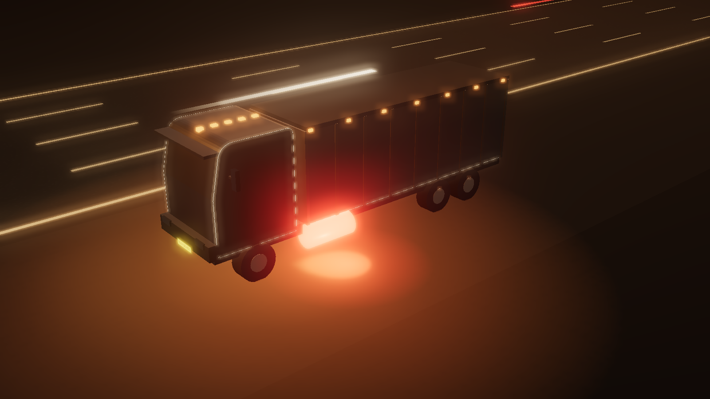

OG image · 1200 × 630 · direction B, Lamplight

Urja
Where did the diesel go?
RJ14 GB 4521
38 L unaccounted near Behror, 2:14 AM
₹3,420
An AI munshi for Indian fleet owners · a concept for Bytebeam
Thumbnail test · 30%